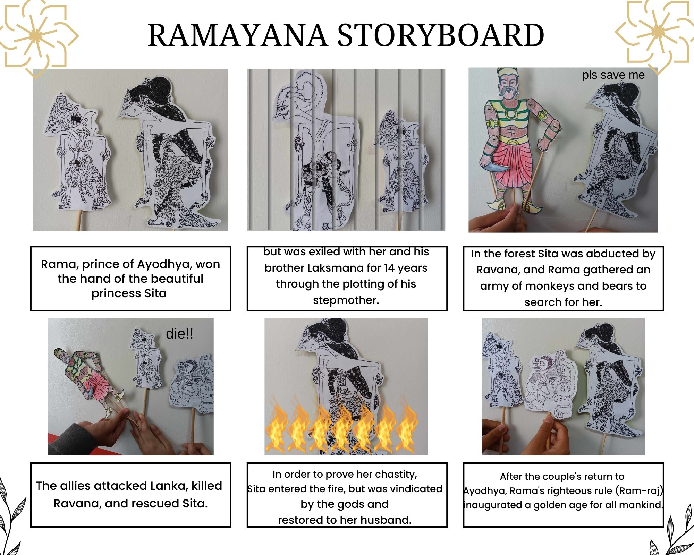

Story Of Ramayana
Story Of Ramayana
The Ramayana is a Sanskrit epic from ancient India, one of the important epics of Hinduism.
The epic follows his fourteen-year exile to the forest urged by his father King Dasharatha, on the
request of Rama's stepmother Kaikeyi;
his travels across forests in the Indian subcontinent with his
wife Sita and brother Lakshmana;
the kidnapping of Sita by Ravana, the king of Lanka, that resulted
in war;
and Rama's eventual return to Ayodhya along with Sita to be crowned king amidst jubilation
and celebration.
